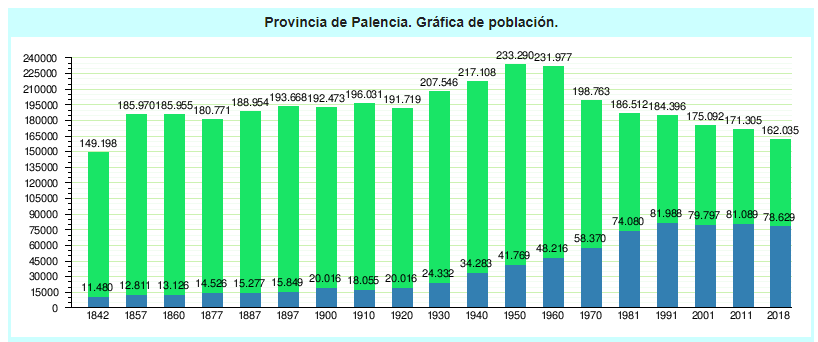

Palencia
Cultura
La Semana Santa de Palencia, Declarada de Interés Turístico Nacional en el año 2005. Fe y fervor popular se ponen de manifiesto en estos días en las calles de Palencia. La Semana Santa palentina mantiene todo el interés y vitalidad que tenía hace varios siglos. El notable número de Cofradías que existen actualmente denota el gran interés que este tipo de devoción inspira entre los palentinos.
Página de cultura de la Diputacion de PalenciaVolver al inicio
Geografía
La provincia apoya su límite septentrional sobre las altas cumbres de la cordillera Cantábrica. En el ángulo noroeste se alza, con su cúspide ya en la provincia de Cantabria, la ingente mole de Peña Prieta, con 2533 metros de altitud. A los costados meridional y oriental de esta se prolonga la gran alineación montañosa de Fuentes Carrionas, con otras alturas menores, como las de Espigüete y Valdecebollas, que rebasan los 2000 m., y en el límite provincial llega a 2010 en Peña Labra. El conjunto pierde altura en dirección sureste dentro de la provincia y accidenta así toda su parte septentrional. Se trata del borde montañoso del gran conjunto de la Meseta, que fue levantado por los plegamientos hercinianos en la Era Primaria y que, arrasado después, fue finalmente levantado de nuevo, con su cobertera de calizas secundarias, por los plegamientos alpinos de la Era Terciaria.

Los mismos plegamientos alpinos produjeron al sur de esa zona montañosa una falla longitudinal en la que el piedemonte serrano deja paso a la planicie meseteña. En esta, sobre la depresión que se formó entonces, se acumularon espesos depósitos finos en régimen lacustre. En la parte superior son de calizas; bajo éstas se hallan las arcillas. Los ríos que proceden de aquella zona serrana septentrional (Carrión, Valdavia, Burejo, Boedo y Pisuerga), al encajarse en la costra caliza, dejan altas mesas o páramos entre ellos. Más abajo, hacia el sur, han barrido casi por completo el caparazón calcáreo y labran sus valles, más amplios, sobre el tramo inferior de las arcillas, dando lugar así en toda la parte meridional de la provincia a otro nivel inferior, la campiña (Tierra de Campos y Valles de Cerrato). Está dominada por algunos resaltes calcáreos, los cerros testigos, al igual que en el páramo surgen a trechos algunos crestones de cuarcitas, avanzadas hacia el sur de la zona serrana septentrional.
Todos estos ríos, que uno de ellos, el Pisuerga, recoge, se benefician de las nieves de aquellas cumbres y aportan su caudal, a través de ese general colector, hacia el Duero, ya fuera de la provincia. El Pisuerga forma valle subsecuente desde Cervera de Pisuerga hasta Aguilar de Campoo. Aguas abajo, en Alar del Rey, deriva de él el canal de Castilla que, más adelante, se bifurca en dos tramos, uno que prosigue hasta Valladolid, y otro, el canal de Campos, que lo hace en una localidad de esta otra provincia. Se utilizan ahora para regadío, pero el canal de Castilla se construyó para que sirviera como vía de comunicación y salida hacia el pie de la cordillera Cantábrica de los trigos de Tierra de Campos. El Ebro toca el ángulo nordeste de la provincia palentina.
Volver al inicio
Historia
Existen vestigios desde la época prehistórica pasando por una época romana de gran esplendor, reflejada en las villas romanas de La Olmeda cerca de Saldaña, o La Tejada en Quintanilla de la Cueza. Durante la Edad Media, los visigodos llevaron a Palencia a otra época de bienestar (quedan vestigios en la cripta de San Antolín de la catedral y en la ermita de San Juan de Baños). Posteriormente la provincia fue fruto de conflictos permanentes por su condición de frontera entre el reino de León y el de Castilla. Uno de los hitos más remarcables de la historia de Palencia se dio durante el siglo XIII, con la fundación de la primera universidad de España y una de las primeras del mundo. A partir de la Edad Moderna, la pujanza de otros centros como Valladolid, desplazó a Palencia al papel de centro secundario.

La provincia de Palencia, al igual que el resto de provincias actuales españolas, fue ideada en 1833 por Javier de Burgos sobre los límites de los antiguos reinos hispánicos. Esta nueva provincia castellana se forma desgajando la parte central de la de Toro, que desde entonces queda tripartita en torno a las ciudades de Toro, Carrión de los Condes y Reinosa. Cada uno de estos territorios formaba un partido-corregimiento, formados respectivamente por 61, 165 y 155 pueblos.
Precisamente las anexiones o separaciones de los partidos de Carrión y de Reinosa a la provincia de Palencia, producirán notables variaciones en sus límites geográficos.16 Esto hace que ya a finales de Antiguo Régimen la provincia de Palencia aparezca configurada con dos demarcaciones: la demarcación pequeña, que excluye a los partidos de Carrión y Reinosa, y la demarcación grande que los incluye a partir de 1804.
A finales del siglo XX y principios del XXI la provincia ha resurgido como un importante nudo de comunicaciones entre la meseta y la costa cantábrica.

Volver al inicio
Localidades
Palencia está dividida en 191 municipios, y su gobierno y administración recaen en la Diputación Provincial de Palencia. La Diputación Provincial está integrada, como órganos de Gobierno de la misma, por el presidente, los vicepresidentes, la Junta de Gobierno y el Pleno. La corporación provincial está integrada por 25 diputados, representantes de los siete partidos judiciales existentes en 1979.
Lista de entidades locales menoresVolver al inicio
Localización
La provincia de Palencia se caracteriza por tener dispares paisajes a los largo de su territorio. Como bien se canta en su himno, hay «vega y valle, llanura y montaña». Palencia es una de las 9 provincias que conforman la comunidad Autónoma de Castilla y León, España, y está situada al norte de la submeseta septentrional, entre Cantabria al norte, la provincia de Burgos al este, la de Valladolid al sur y León al oeste. Tiene una extensión territorial de 8029 km².

Volver al inicio
Naturaleza
La naturaleza invade hasta el último rincón de la provincia de Palencia, desde sus interrumpidas llanuras en el Cerrato Palentino y las grutas que conforman sus bodegas, pasando por los infinitos mares de Tierra de Campos que desembocan a los pies de la grandiosa Montaña Palentina.
Sin duda alguna, Palencia ofrece una variedad de entornos naturales que destacan por su singularidad y calidad ambiental. Por ello, la provincia de Palencia cuenta con cinco Espacios Naturales Protegidos, un Parque Natural y un GeoParque UNESCO. Organismos que velan por la sostenibilidad del entorno y proporcionan una garantía de calidad.
-kgXC-U14076718522iaB-624x385@El Norte.jpg)

Volver al inicio
Tradiciones
Tradicionalmente, los dulzaineros y las jotas, son los amenizadores de las fiestas.
Algunas fiestas y tradiciones de interés Nacional:
- Fiestas de San Juan Bautista, en la localidad de Baños de Cerrato
- Descenso Internacional del Pisuerga, en la localidad de Alar del Rey
- Regata Internacional del Carrión, en la localidad de Velilla del Río Carrión
- Festival Nacional de exaltación del Cangrejo de Río, en la localidad de Herrera de Pisuerga
- Fiestas de Nuestra Señora del Carmen (Barruelo de Santullán)
Volver al inicio
Otros
Gastronomía
La Gastronomía de la provincia de Palencia es el conjunto de platos y tradiciones culinarias de la provincia de Palencia. Como otras provincias de Castilla y León (España), la cocina palentina reúne los saberes culinarios y las tradiciones de la cocina castellana. Tierra donde la preparación básica es el asado (horno de leña) de las abundantes carnes que ofrece la tradicional ganadería ovina que recorre sus paisajes. Principalmente de su lechazo churro. Es una cocina labradora y pastoril de preparaciones sencillas, que emplean los ingredientes que se cultivan naturalmente en la provincia. Caso de las humildes sopas de rastrojo y las castellanas y el cocido castellano.
De los cereales procedentes de sus campos, se elaboran abundantes galletas castellanas, sobre todo en Aguilar de Campoo. Por sus tierras pasa la ruta jacobea (variante francesa), y es considerada fuente de transmisión de saber culinario.

Demografía
La población creció de manera moderada en la primera mitad del siglo XX, pasando de 192 473 habitantes en 1900 a 233 290 en 1950. Después se produjo un proceso inverso, con una disminución fruto de los flujos migratorios internos de España hacia las zonas más industrializadas. Así, en 1991 la población había descendido a 185 479 habitantes, con un notable envejecimiento. Así pues, hay que enmarcar la situación demográfica palentina en el contexto del grave problema de despoblación rural que sufre la Comunidad Autónoma de Castilla y León. Pese al crecimiento de la capital (13 126 habitantes en 1860; 41 796 en 1950; 82 169 en 2010), la población total de la provincia es inferior a la que tenía a mediados del siglo XIX (INE, Censos de Población). Actualmente solo existe un núcleo de población que sobrepase los 10 000 habitantes que es Palencia con unos 80 000 aproximadamente. Bastante por detrás quedan Aguilar de Campoo, Guardo o Venta de Baños.
La población de toda la provincia era de 162 035 personas en 2018, destacando que en la provincia existen 469 núcleos de población, de los cuales 191 son municipios (con ayuntamiento) y 278 son pedanías (entidades locales menores). Al relacionar la población provincial (excluida Palencia capital) con el número de localidades, resulta un tamaño medio de 193 habitantes por núcleo, herencia del sistema territorial de la Reconquista de la Meseta (siglos XIII-XIV).
Volver al inicio